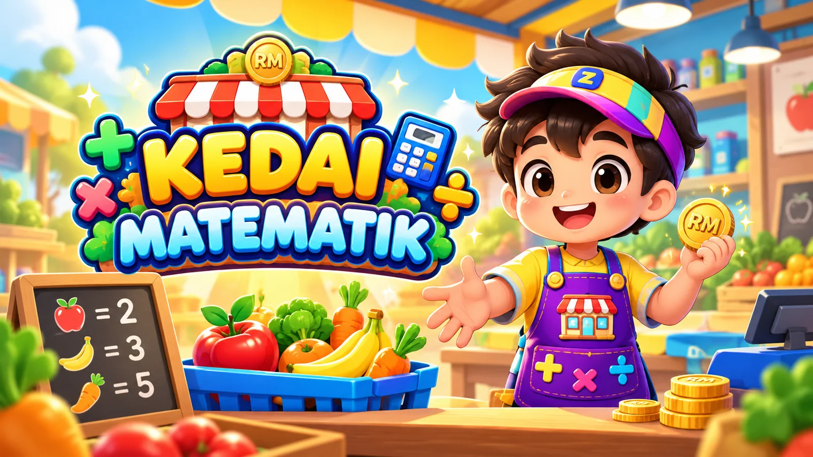
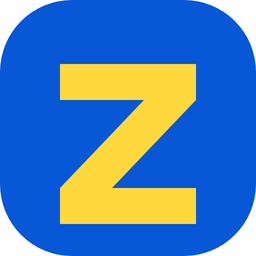
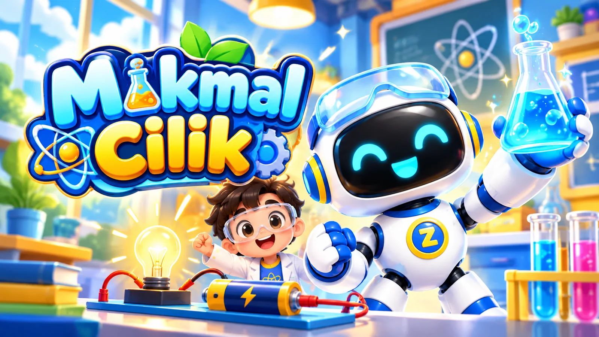
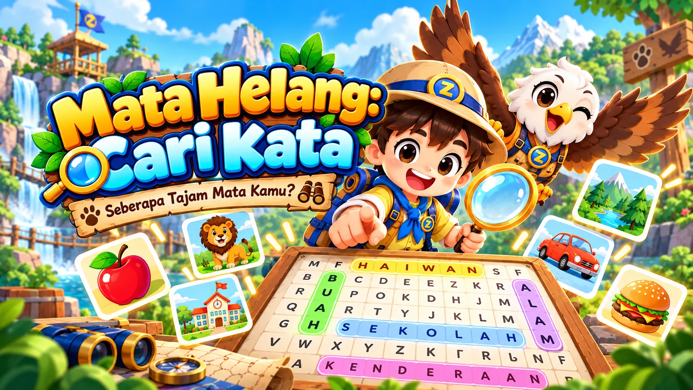
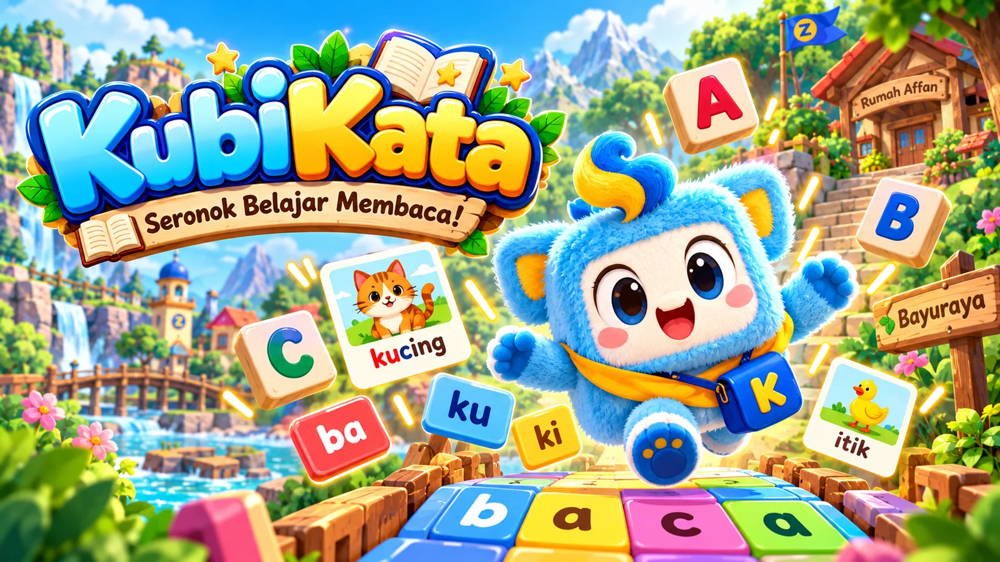
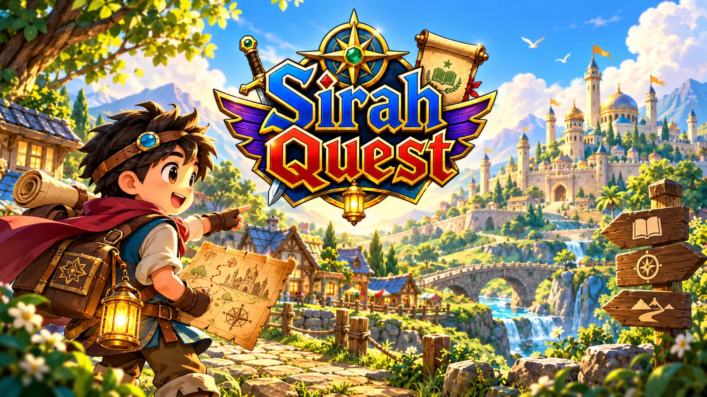

MEMPERSEMBAHKAN
DETEKTIF BAHASA
KELUARGA EDUGAME PERCUMA MY
ZilTeroka menghimpunkan permainan pendidikan percuma untuk kanak-kanak. Detektif Bahasa ialah sebahagian daripada keluarga permainan ZilTeroka yang menggabungkan pembelajaran, penerokaan dan aktiviti interaktif.




Belajar bunyi, suku kata dan ejaan bersama Kubi.

Terokai pengembaraan pembelajaran Sirah secara interaktif.